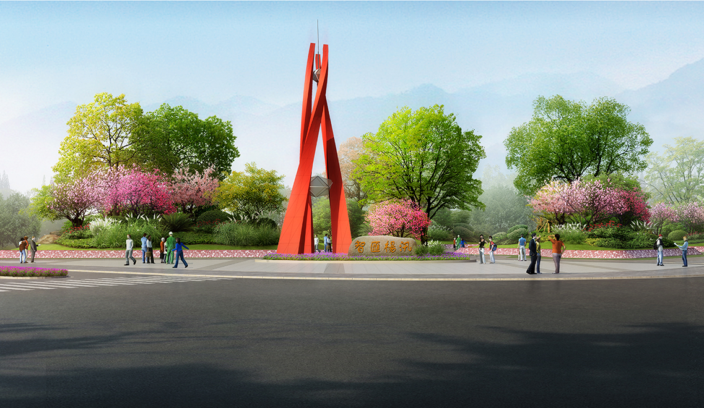
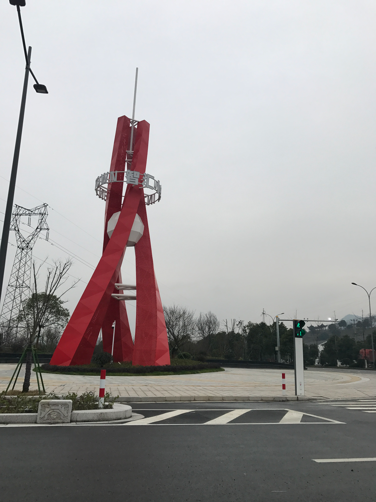

浙江树人大学树人广场雕塑
Zhejiang tree man University tree man square sculpture
项目地点：绍兴市树人大学
设计时间：2016年
树人广场为车辆下高速后进入树人大学的必经区块，设 计考虑呼应树人大学现代化的环 境氛围，同时又能展现所在 区域的时代风貌，整体景观灵感源至山水环绕的地理格局特 色， 因改节点整体定位为“新”。雕塑的设计主要体现现代化 的精气神。 相互交融象征着编织纺织的肌理，向上的态势也 代表着积极的态度和永不停息的脚步。 三根竖向构筑物也代 表着“三个永不”精神 从每个侧面看，三个竖向构筑物两两相 合，暗喻着“人”字，代表着树人大学为代表 的产业转型以行 政区域“以人为本”的理念。 构筑物最终的汇聚，包括其中的 两颗结晶，也是象征着各处智慧汇聚后所形成。

 返回顶部
返回顶部